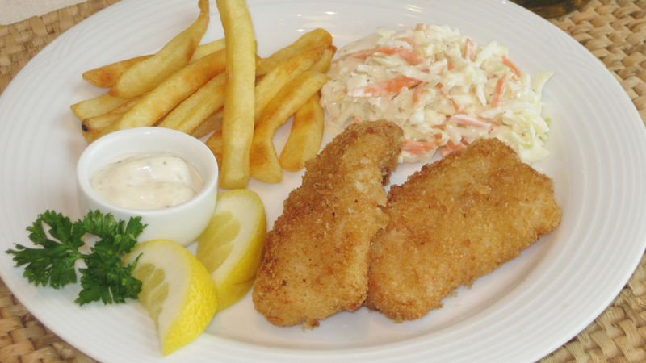

Crispy Fried Fish
Ratings
Comments
Préparation 20 Min
Total 20 Min
Personnes 4

Ratings
Comments
Préparation 20 Min
Total 20 Min
Personnes 4
1/3 tasse de farine tout usage Gold Medal ™
2 cuillères à café de sel assaisonné
2 des œufs
1/2 tasse de bière brune ou d'eau
1 1/2 tasses de chapelure croustillante panko Progresso ™ Huile d'arachide ou de maïs pour la friture
1 1/2 lb filets de poisson (doré, morue, corégone ou tilapia)
1 Dans un plat peu profond, mélanger la farine et le sel assaisonné. Dans un bol moyen, battre les œufs et la bière au fouet. Placez les miettes de pain dans un grand sac en plastique pour le stockage des aliments, refermable.
2 Dans une poêle électrique ou une friteuse, chauffer environ 2 pouces d'huile à 350 ° F. Enrober les filets de poisson des deux côtés avec le mélange de farine, puis plonger dans le mélange de bière, en laissant l'excès dégouliner dans le bol. Placez 1 ou 2 morceaux de poisson à la fois dans un sac en plastique avec de la chapelure; sceller le sac et agiter pour bien enrober.
3 Faites frire les poissons par lots dans l'huile chaude environ 4 minutes, en les retournant une fois, jusqu'à ce qu'ils soient dorés. Égoutter sur du papier absorbant. Servir chaud.